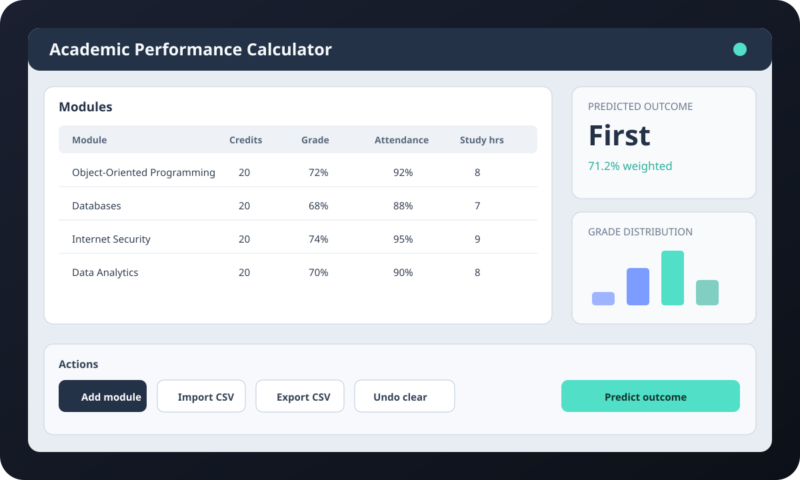

Academic Performance Calculator
My final-year dissertation: a Java Swing application for module management, weighted performance tracking, visualisation, Microsoft Access persistence, file workflows and prediction-style academic guidance — now also available as a one-click browser demo with no Java installation or sign-in required.

The problem
University performance can be difficult to interpret when grades, credits, attendance and study information are spread across different places. I built a self-contained desktop application that consolidates this information and turns it into a clearer view of current performance and likely classification.
This project let me combine object-oriented programming, persistence, visualisation, validation and prediction logic in one complete piece of software rather than separate coursework exercises.
What I built
- Java Swing interface for adding, deleting and clearing module records.
- Undo-style restoration for accidental table changes.
- Weighted performance calculations using grade and credit information.
- CSV export and import workflows.
- Microsoft Access persistence through UCanAccess.
- Bar and pie chart views for academic performance.
- Prediction-style classification output based on current module data.
- Built-in sample data and a demo login flow so the project is presentation-ready.
Engineering decisions
- Desktop-first scope: Swing and local persistence matched the dissertation goal and kept the project self-contained.
- Data validation: module inputs remain internally consistent before being used in weighted calculations or predictions.
- Recoverability: import/export and undo-style behaviour make the tool safer to experiment with.
- Source-first repository: generated Java build output has been removed from the current branch, leaving source, assets, database dependencies and reproducible launch tooling.
Verification
GitHub Actions builds the Maven project, runs JUnit tests and packages the full desktop JAR. A separate browser pipeline builds a thin Swing-only JAR, launches it in Chromium through CheerpJ, requires the actual Java dashboard to report readiness, captures the rendered interface and only then publishes the build to GitHub Pages.
Architecture
What this demonstrates
The dissertation demonstrates end-to-end ownership of a larger Java application: designing the interface, modelling data, connecting a database, handling files, calculating outcomes, visualising results and delivering a complete working system as an assessed final-year project.